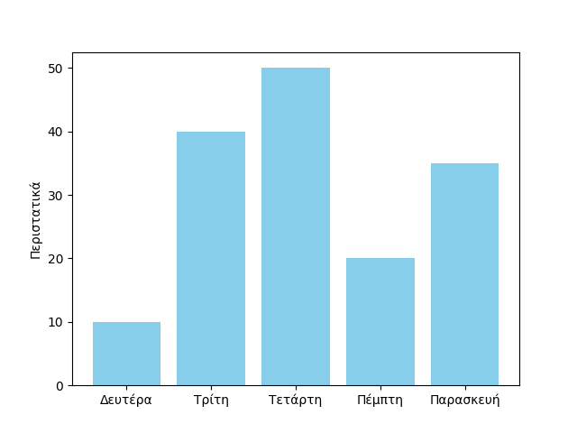

Εργαστηριακό τμήμα μαθήματος
Στο εργαστήριο του μαθήματος οι γλώσσες προγραμματισμού που εξετάζονται είναι η Python, η Haskell και η Prolog, ως εκπρόσωποι του προστακτικού, του συναρτησιακού και του λογικού προγραμματισμού αντίστοιχα.
Python
Haskell
Prolog
Εργαστηριακές ασκήσεις 2023-2024
template για το my_re_functions.py
Θα πρέπει να εμφανίζει:
ανάγνωση και εκτύπωση ημερομηνιών
Ένα παράδειγμα εκτέλεσης
ορίσματα γραμμής εντολών με το sys.argv
| command_line_arg_example1.py | |
|---|---|
ορίσματα γραμμής εντολών με το argparse
Ένα παράδειγμα εκτέλεσης
απλό γράφημα με το matplotlib
| matplotlib_example1.py | |
|---|---|

χρονομέτρηση κώδικα στην Python με το time.time()
| time_execution1.py | |
|---|---|
χρονομέτρηση κώδικα στην Python με το timeit.default_timer()
| time_execution2.py | |
|---|---|